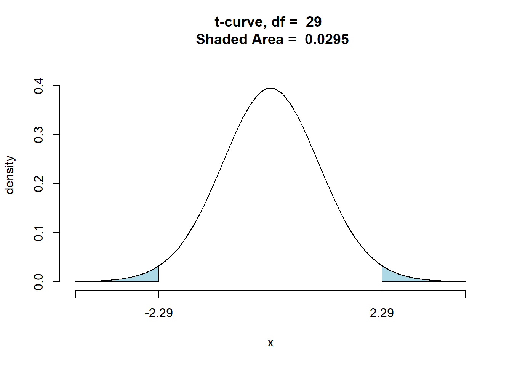
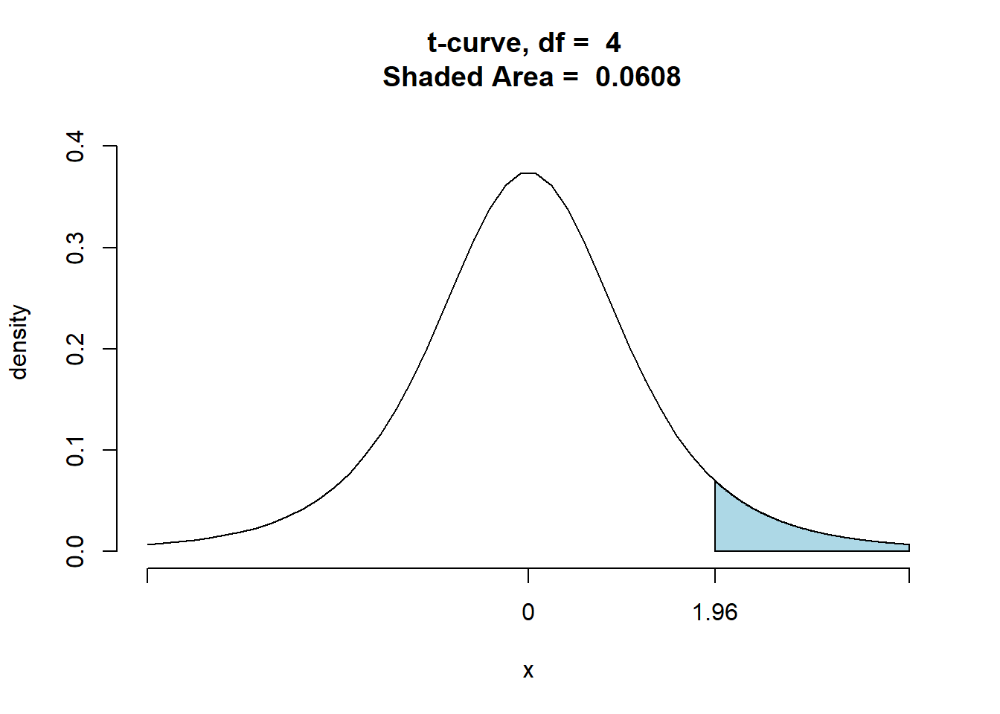
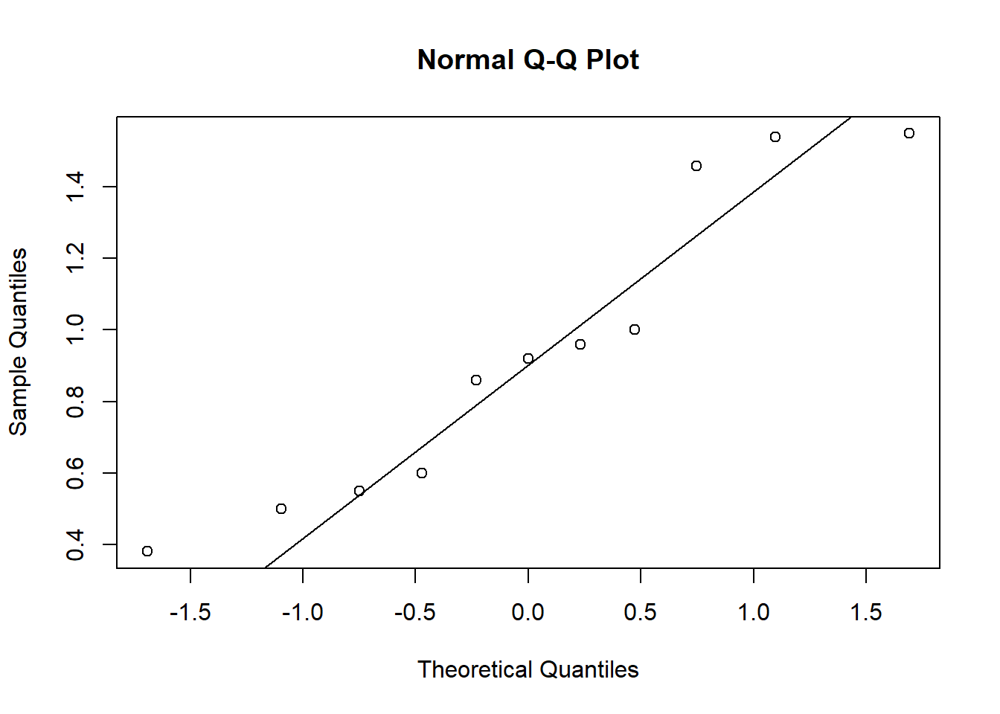

Chapter 8 Hypothesis Testings
8.1 Definitions
- A hypothesis is a claim or statement about a property of a population. A hypothesis test is a procedure for testing a claim about a property of a population.
- Rare Event Rule for Inferential Statistics–If, under a given assumption, the probability of a particular observed event is exceptionally small, we conclude that the assumption is probably not correct.
- The null hypothesis (denoted by \(H_{0}\)) is a statement that the value of a population parameter (such as proportion, mean, or standard deviation) is equal to some claimed value. We test the null hypothesis directly in the sense that we assume it is true and reach a conclusion to either reject \(H_{0}\) or fail to reject \(H_{0}\).
- The alternative hypothesis (denoted by \(H_{A}\)) is the statement that the parameter has a value that somehow differs from the null hypothesis. The symbolic form of the alternative hypothesis must use one of these symbols: <, >, \(\neq\).
- If you are conducting a study and want to use a hypothesis test to support your claim, the claim must be worded so that it becomes the alternative hypothesis.
8.2 Steps
- Assumptions
- Hypothesis statements & define parameters
- Calculations
- Conclusion, in context
8.3 Assumptions for testing for proportions (Same as confidence intervals for proportions)
- SRS
- Normal Distribution
np>10 and n(1-p)>10
- Large population size.
8.4 Writing Hypothesis statements:
- Null hypothesis - is the statement being tested; this is a statement of “no effect” or “no difference” (\(H_{0}\)) \[H_{0}:\textbf{parameter = hypothesized value}\]
- Alternative hypothesis - is the statement that we suspect is true (\(H_{A}\)) \[H_{A}: \textbf{parameter > hypothesized value}\]
\[H_{A}: \textbf{parameter < hypothesized value}\]
\[H_{A}: \textbf{parameter} \neq \textbf{hypothesized value}\] Fact to remember about hypotheses: ALWAYS refer to populations (parameters) (Use the correct notations.)
8.5 Calculations
8.6 significance level
The significance level (denoted by \(\alpha\)) is the probability that the test statistic will fall in the critical region when the null hypothesis is actually true (making the mistake of rejecting the null hypothesis when it is true). Common choices are 0.05, 0.01, and 0.10. If the problem does not specify a value, use 0.05.
8.7 Test Statistic
The test statistic is a value used in making a decision about the null hypothesis, and is found by converting the sample statistic to a score with the assumption that the null hypothesis is true. Common formula: \[\textbf{Test Statistic}=\frac{\textbf{statistic-parameter}}{\textbf{SE of statistic}}\] Test statistic for one sample proportion: \[z=\frac{\hat{p}-p}{\sqrt{\frac{pq}{n}}}\]
8.8 P-values
Assuming \(H_{0}\) is true, the probability that the test statistic would have a value as extreme or more than what is actually observed.
Facts about p-values:
- ALWAYS make decision about the null hypothesis (\(H_{0}\))!
- Large p-values show support for the null hypothesis, but never that it is true!
- Small p-values show support that the null is not true. (“if the p-value is low the Ho must go”)
- Double the p-value for two-tail (=) tests (“things have changed”)
- Never accept the null hypothesis!
8.9 Calculating P-values (By hand)
Draw & shade a curve & calculate the p-value. z values are the test statistics. 1. right-tail test (Greater than) z = 1.6; p-value=0.0548 2. left-tail test (less than) z = -2.4; P-value = .0082 3. two-tail test (not equal to) z = 2.3; P-value = (.0107)2 = .0214
8.10 Statistical Significant
The p-value is as small or smaller than the level of significance, \(\alpha\)
- If \(p-value>\alpha\), “fail to reject” the null hypothesis at the \(\alpha\) level.
- If \(p-value \leq \alpha\), “reject” the null hypothesis at the \(\alpha\) level.
8.11 Writing Conclusions:
- A statement of the decision being made (reject or fail to reject \(H_{0}\)) & why (linkage)
- A statement of the results in context. (state in terms of \(H_{A}\))
8.12 Conclusion Format:
Since the p-value < (>) \(\alpha\), I reject (fail to reject) the \(H_{0}\). There is (is not) sufficient evidence to suggest that \(H_{A}\).(Be sure to write \(H_{A}\) in context (words)!)
8.13 Example
The article “Credit Cards and College Students: Who Pays, Who Benefits?” (J. College Student Development (1998): 50-56) described a study of credit card payment practices of college students. According to the authors of the article, the credit card industry asserts that at least 50 % of college students carry a credit card balance from month to month. However, the authors of the article report that, in a random sample of 310 college students, 217 carried a balance each month. Does this sample provide sufficient evidence to reject the industry claim?
8.14 Assumptions
- SRS of context
- Normal Distribution: n=310, p=0.5
np=155>10 and n(1-p)=155>10 - Large Population Size
8.15 Hypothesis Statement
\[H_{0}=0.5\\H_{A}>0.5\]
8.16 Calculation:
##
## 1-sample proportions test without continuity correction
##
## data: 217 out of 310
## X-squared = 49.6, df = 1, p-value = 9.426e-13
## alternative hypothesis: true p is greater than 0.5
## 95 percent confidence interval:
## 0.655609 1.000000
## sample estimates:
## p
## 0.78.17 Conclusion
Sine the p-value < \(\alpha\), I reject the \(H_{0}\). There is sufficient evdience to suggest that at least 50% of college students carry credit card balance month to month.
8.18 More Examples
Children as young as 2 years of age, upon seeing an object placed under a pillow in a familiar setting at home, will understand to look for it after an interval of time and be able to find it. Investigators believe this capability will be less pronounced in a laboratory situation, where the child is away from the familiar setting of home. Let denote the proportion of 2-year-olds than have this understanding in the home situation, and suppose that p = .35. The investigators wish to determine whether the proportion that remembers is less when the child is away from home. A researcher took a sample of 100 students and discovered 30 of them understood to look for an object under a pillow.
8.19 Assumptions
- SRS of context
- Normal Distribution. n=100, p=.35 np=35>10 and n(1-p)=65>10
- Large Population Size.
8.20 Hypothesis Statement
\[H_{0}=0.35\\H_{A}<0.35\]
8.21 Calculation
##
## 1-sample proportions test without continuity correction
##
## data: 30 out of 100
## X-squared = 1.0989, df = 1, p-value = 0.1473
## alternative hypothesis: true p is less than 0.35
## 95 percent confidence interval:
## 0.0000000 0.3798321
## sample estimates:
## p
## 0.38.22 Conclusion
Since the p-value > \(\alpha\), I fail to reject \(H_{0}\). There is not sufficient evidence to suggest that the proportion of children remember finding an object under a pillow that is less when the child is away from home.
8.23 Using real datasets
Are a majority of Georgetown College Students female?
##
##
## Inferential Procedures for a Single Proportion p:
## Variable under study is sex
## Continuity Correction Applied to Test Statistic
##
##
## Descriptive Results:
##
## female n estimated.prop
## 40 71 0.5634
##
##
## Inferential Results:
##
## Estimate of p: 0.5634
## SE(p.hat): 0.05886
##
## 95% Confidence Interval for p:
##
## lower.bound upper.bound
## 0.466564 1.000000
##
## Test of Significance:
##
## H_0: p = 0.5
## H_a: p > 0.5
##
## Test Statistic: z = 0.9571
## P-value: P = 0.1692
8.24 Errors
When you perform a hypothesis test you make a decision: reject \(H_{0}\) or fail to reject \(H_{0}\). When you make one of these decisions, there is a possibility that you could be wrong! That you made an error! There are two decisions that we make; reject or fail to reject. Each could possibly be a wrong decision; therefore, there are two types of errors.
8.25 Type I error
- When you reject the null hypothesis that is really true
- Denoted by \(\alpha\)
- Is the level of significance of the test
8.26 Type II error
- When you fail to reject the null hypothesis when it is false
- Denoted by \(\beta\)
| \(H_{0} True\) | \(H_{0} False\) | |
|---|---|---|
| Reject \(H_{0}\) | Type I | Good |
| Fail to reject \(H{0}\) | Good | Type II |
8.27 Example
Lay’s Chip Company decides to accept a truckload of potatoes based upon results from a sample of potatoes from the truckload.
What are the hypotheses?
Type I error?
Type II error?
From the supplier’s viewpoint, which is more serious?
From the chip company’s viewpoint, which is more serious?
8.28 Example
Assume that we are conducting a hypothesis test of the claim that a method of gender selection increases the likelihood of a baby girl, so that the probability of a baby girls is p > 0.5.
Here are the null and alternative hypotheses: \[P=0.5\\p>0.5\] a) Identify a type I error.
- Identify a type II error.
8.29 Testing a Claim About a Mean
8.30 Assumptions for t-test: (same as CI for the means)
- Have an SRS of context
- \(\sigma\) unknown
- Distribution is approximately normal
- Given
- Large sample size (CLT, n>30)
- Graph data (for smaller sample sizes)
8.31 Hypothesis Statement:
Use the notation \(\mu\)
8.32 Calculation
The test statistic is \[t=\frac{\bar{x}-\mu}{s/\sqrt{n}}\]
8.33 Conclusion
Same format as before.
8.34 Example:
The Wall Street Journal (January 27, 1994) reported that based on sales in a chain of Midwestern grocery stores, President’s Choice Chocolate Chip Cookies were selling at a mean rate of $1323 per week. Suppose a random sample of 30 weeks in 1995 in the same stores showed that the cookies were selling at the average rate of $1208 with standard deviation of $275. Does this indicate that the sales of the cookies is different from the earlier figure?
8.35 Assumptions
- SRS of context
- \(\sigma\) unknown
- Normal distribution. \(n\geq 30\)
8.36 Hypothesis Statement
\[H_{0}: \mu=1323\\ H_{A}: \mu\neq 1323\]
8.37 Calculation
##
##
## Inferential Procedures for One Mean mu:
##
##
## Descriptive Results:
##
## mean sd n
## 1208 275 30
##
##
## Inferential Results:
##
## Estimate of mu: 1208
## SE(x.bar): 50.21
##
## 95% Confidence Interval for mu:
##
## lower.bound upper.bound
## 1105.313312 1310.686688
##
## Test of Significance:
##
## H_0: mu = 1323
## H_a: mu != 1323
##
## Test Statistic: t = -2.29
## Degrees of Freedom: 29
## P-value: P = 0.02945
8.38 Conclusion
Sine p-value < \(\alpha\), I recject \(H_{0}\). There is sufficent evidence to suggest the sales of cookies is different from the earlier figure.
8.39 Example
The Fritzi Cheese Company buys milk from several suppliers as the essential raw material for its cheese. Fritzi suspects that some producers are adding water to their milk to increase their profits. Excess water can be detected by determining the freezing point of milk. The freezing temperature of natural milk varies normally, with a mean of -0.545 degrees and a standard deviation of 0.008. Added water raises the freezing temperature toward 0 degrees, the freezing point of water (in Celsius). The laboratory manager measures the freezing temperature of five randomly selected lots of milk from one producer with a mean of -0.538 degrees with standard deviation 0.008. Is there sufficient evidence to suggest that this producer is adding water to his milk?
8.40 Assumptions
- SRS of context
- \(\sigma\) unknown
- Normal distribution given
8.41 Hypothesis Statement
\[H_{0}: \mu=-0.545 \\ H_{A}: \mu> -0.545\]
8.42 Calculation
##
##
## Inferential Procedures for One Mean mu:
##
##
## Descriptive Results:
##
## mean sd n
## -0.538 0.008 5
##
##
## Inferential Results:
##
## Estimate of mu: -0.538
## SE(x.bar): 0.003578
##
## 95% Confidence Interval for mu:
##
## lower.bound upper.bound
## -0.545627 Inf
##
## Test of Significance:
##
## H_0: mu = -0.545
## H_a: mu > -0.545
##
## Test Statistic: t = 1.957
## Degrees of Freedom: 4
## P-value: P = 0.06102 ## Conclusion Since p-value > \(\alpha\), I fail to reject \(H_{0}\). There is not sufficient evidence to suggest that this producer is adding water to his milk.
8.43 Example with real datasets
Listed below are the measured radiation emissions (in W/kg) corresponding to a sample of cell phones. Use a 0.05 level of significance to test the claim that cell phones have a mean radiation level that is less than 1.00 W/kg.
0.38 0.55 1.54 1.55 0.50 0.60 0.92 0.96 1.00 0.86 1.46
8.44 Assumptions
- SRS of context.
- \(\sigma\) unknown
- Normal Distribution because most of the points on the QQ-plot are on the line.
cellphone<-c(0.38, 0.55, 1.54, 1.55, 0.50, 0.60, 0.92, 0.96, 1.00, 0.86, 1.46)
qqnorm(cellphone)
qqline(cellphone)
8.45 Hypothesis Statement
\[H_{0}: \mu=1.00 \\ H_{A}: \mu< 1.00\]
8.46 Calculation
##
##
## Inferential Procedures for One Mean mu:
##
##
## Descriptive Results:
##
## variable mean sd n
## cellphone 0.9382 0.4229 11
##
##
## Inferential Results:
##
## Estimate of mu: 0.9382
## SE(x.bar): 0.1275
##
## 95% Confidence Interval for mu:
##
## lower.bound upper.bound
## -Inf 1.169269
##
## Test of Significance:
##
## H_0: mu = 1
## H_a: mu < 1
##
## Test Statistic: t = -0.4849
## Degrees of Freedom: 10
## P-value: P = 0.31918.47 Conclusion
Since p-value>\(\alpha\), I fail to reject \(H_{0}\). There is not sufficient evidence to suggest that cell phones have a mean radiation level that is less than 1.00 W/kg.
8.48 Example
A random sample of 22 fifth grade pupils have a grade point average of 5.0 in maths with a standard deviation of 0.452, whereas marks range from 1 (worst) to 6 (excellent). The grade point average (GPA) of all fifth grade pupils of the last five years is 4.7. Is the GPA of the 22 pupils different from the populations’ GPA?
The following data contain the GPA from 22 pupils. Assume the pupils’ GPA are nomally distributed.
5 5.5 4.5 5 5 6 5 5 4.5 5 5 4.5 4.5 5.5 4 5 5 5.5 4.5 5.5 5
8.49 Assumptions:
- SRS
- \(\sigma\) unknown
- Normal Distribution was given.
8.50 Hypothesis Statement
\[H_{0}: \mu=4.7 \\ H_{A}: \mu\neq 4.7\]
8.51 Calculation
GPA<-c(5, 5.5, 4.5, 5, 5, 6, 5, 5, 4.5, 5, 5, 4.5, 4.5, 5.5, 4, 5, 5, 5.5, 4.5, 5.5, 5)
ttestGC(~GPA, mu=4.7, alternative = "two.sided", graph = TRUE)##
##
## Inferential Procedures for One Mean mu:
##
##
## Descriptive Results:
##
## variable mean sd n
## GPA 4.976 0.4603 21
##
##
## Inferential Results:
##
## Estimate of mu: 4.976
## SE(x.bar): 0.1005
##
## 95% Confidence Interval for mu:
##
## lower.bound upper.bound
## 4.766650 5.185731
##
## Test of Significance:
##
## H_0: mu = 4.7
## H_a: mu != 4.7
##
## Test Statistic: t = 2.749
## Degrees of Freedom: 20
## P-value: P = 0.01236## Conclusion Since p-value<\(\alpha\), we reject \(H_{0}\). There is sufficient evidence to suggest the GPA of the 22 pupils different from the populations’ GPA.